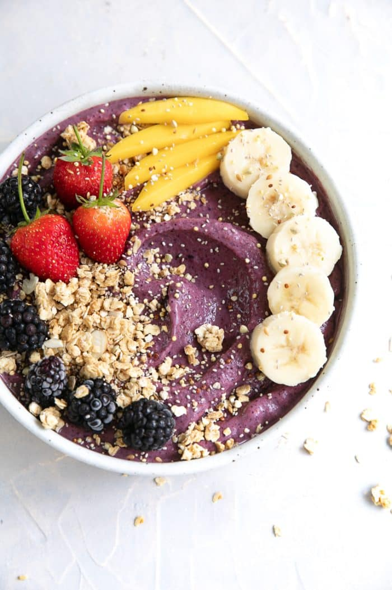

Acai Bowl

Description
This Acai Bowl recipe by Chef Jessica Randhawa is a
quick, vibrant, and nutrient-packed breakfast or
snack that you can whip up in just minutes. Made
from frozen acai puree blended with bananas, berries,
milk or juice, and a touch of yogurt, this bowl
delivers a thick, creamy texture bursting with fruity
flavor. Topped with your choice of granola, fresh
fruit, seeds, or nuts, it's a customizable, energizing
treat loaded with fiber, antioxidants, and healthy
fats—all for a fraction of what you'd pay at a café.
Inspired by Jessica’s college days in Santa Cruz,
this recipe captures the essence of the Brazilian
classic while offering flexibility for vegan,
dairy-free, or low-calorie adaptations. Whether
you’re drawn in by the superfood benefits of acai
or the visual appeal of Instagram-worthy toppings,
this homemade version is an easy way to enjoy a
refreshing and wholesome dish any time of day.
Ingredients
- 1 banana – sliced and frozen
- ½ cup blueberries – frozen
- ½ cup strawberries – frozen
- ¾ cup milk or juice – use your favorite (dairy milk, soy, almond, apple, grape, etc.)
- ½ cup plain yogurt – or substitute with more milk or juice
- 200 grams (2 packets) frozen acai puree – broken into pieces
- Assorted toppings – nuts, seeds, fresh fruit, granola, coconut, etc.
Steps
-
Freeze your fruit: Slice your banana and place it on a parchment-lined plate or tray. Add the blueberries and strawberries. Transfer the tray to the freezer and let the fruit freeze completely.
-
Blend: In a high-speed blender with a tamper, add the milk and yogurt first, followed by the frozen banana, berries, and acai puree pieces. Blend on low speed, using the tamper to push down the ingredients until smooth. Add more liquid only if necessary.
-
Assemble: Divide the smoothie mixture into two bowls. Top with your favorite ingredients such as sliced banana, fresh berries, nuts, seeds, or granola. Enjoy immediately.
Home